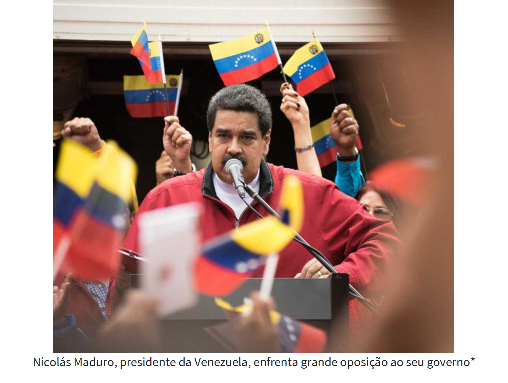
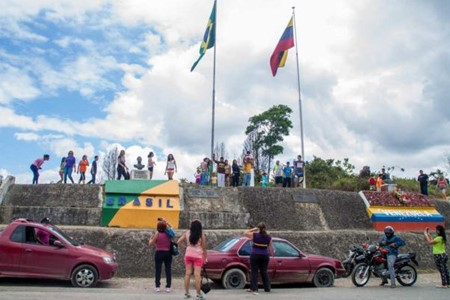

A imigração venezuelana no Brasil foi motivada por uma crise
socioeconômica e humanitária vivida na Venezuela.
A imigração venezuelana no Brasil foi motivada pelo cenário de crise vivido na Venezuela, que enfrenta um caos político, econômico e institucional. O país vive instabilidades no governo desde 2013. A falta de emprego e de recursos básicos para a sobrevivência resultou em uma situação de miséria, fome, agravamento de doenças e violência. Por causa disso, milhares de venezuelanos começaram a migrar para outras regiões à procura de melhores condições de vida e oportunidades de emprego. Um dos principais destinos escolhidos pelos imigrantes foi o Brasil.
O caos político, econômico e humanitário vivido na Venezuela tem sido noticiado em jornais do mundo todo. Atualmente, o país, governado por Nicolás Maduro, enfrenta uma forte insatisfação por parte da população, que o considera autoritário e acredita que sua gestão colaborou para que o país estivesse em um cenário de miséria e falta de empregos. Em razão dessa triste realidade, milhares de venezuelanos migraram para outras regiões à procura de melhor qualidade de vida e oportunidades de trabalho. Atualmente, o fluxo migratório de venezuelanos é o maior no Brasil. Por causa desse intenso fluxo migratório, problemas começaram a surgir em território nacional, visto que a maioria dos venezuelanos fixou-se em um único estado, Roraima.
Nicolás Maduro, atual presidente da Venezuela, foi eleito em 2013 após o falecimento de Hugo Chávez, que era o presidente da Venezuela. Maduro tentou manter a mesma política praticada no governo anterior, porém o cenário herdado apontava para graves problemas, como a alta do preço do barril de petróleo, a inflação acima de 800% ao ano, elevação dos preços dos recursos básicos e a falta deles no mercado. Toda essa conjuntura provocou o colapso socioeconômico do país. A saída dos venezuelanos foi migrar para outros países em busca de condições mínimas para sobreviver.
O Instituto de Migrações e Direitos Humanos define migrante como “toda pessoa que se transfere do seu lugar habitual, residência ou local de nascimento para outro local, região ou país.” Os venezuelanos adentram o território brasileiro pelo estado de Roraima, mais especificamente pela cidade de Pacaraima, que faz fronteira terrestre com a Venezuela.
O intenso fluxo migratório de venezuelanos para o Brasil afetou principalmente o estado de Roraima, por ser o local de maior acessibilidade e também porque nele se concentrou a maior parte dos imigrantes que entraram no território brasileiro. Há uma sobrecarga nos serviços públicos do estado, que não consegue sozinho atender a essa nova demanda.
Turma 8A202